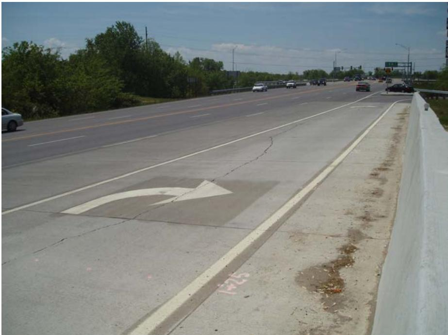

Material Characterization and Strength Testing
Material Characterization and Strength Testing is a suite of laboratory investigations—core sampling with petrographic examination, ring‑test cracking observation, coefficient‑of‑thermal‑expansion measurement, and gradation/Atterberg‑limit testing—that quantifies concrete compressive strength, stiffness, volume‑change tendencies, and the mechanical properties of bound and unbound support layers[1][2]. Its purpose is to confirm or clarify observations from visual distress surveys, nondestructive‑testing programs, and deflection measurements, thereby uncovering mechanisms such as material‑rupture detection (e.g., alkali‑silica reactivity), excessive thermal expansion, or loss of support in the aggregate base or subgrade[3][4]. Applied chiefly to concrete pavements and their supporting layers when field data alone cannot explain cracking or surface defects, the testing delivers quantitative data—strength, resilient modulus, density/gradation, and mix‑design parameters—that guide diagnosis and treatment while acknowledging its limited utility for certain distress types[2][4].
Sources (4)
Purpose and investigation objectives
The investigation evaluates the condition of the pavement’s material system—including the concrete surface, its bound support layers, and the underlying unbound aggregates and subgrade soils. It addresses concrete strength and stiffness, potential material‑rupture phenomena such as MRD or alkali‑silica reactivity, volume‑related properties (coefficient of thermal expansion and mix‑design parameters), and the gradation and plasticity characteristics of the aggregate base and subgrade.
The investigation should answer: when a fully restrained concrete sample cracks and whether early cracking signals a higher field‑cracking risk; if MRD is indeed responsible for observed surface defects and what mechanism underlies it; whether the slab’s coefficient of thermal expansion is excessive and mix proportioning parameters fall within acceptable limits; what the current gradation, density and Atterberg limit values are for the base and subgrade and how they compare with design specifications; whether the concrete meets required strength criteria; how stiff the concrete and its bonded layers are; what resilient‑modulus values exist for the unbound and subgrade materials; and finally, whether laboratory results confirm or clarify findings from distress surveys and support feasible treatment alternatives. [1][2][3][4]
The following figure illustrates potential deterioration of the subbase near a CRCP structural distress known as a punchout.
 Potential deterioration of subbase near CRCP structural distress (punchout). [4]
Potential deterioration of subbase near CRCP structural distress (punchout). [4]
The figure displays a cross-section of a concrete pavement structure featuring transverse cracks and reinforcing bars, with the caption identifying the condition as potential deterioration near a punchout.
[1] — Ch. 3 (p. 137); [2] — Ch. 4 (pp. 102–175), Ch. 13 (p. 42); [3] — Ch. 3 (p. 41); [4] — Ch. 3 (p. 35)
Scope and applicability
Material Characterization and Strength Testing is appropriate for concrete pavements—including continuously reinforced concrete sections and plain slab pavements—as well as their bound support layers, unbound granular bases, and underlying subgrade. The testing is called for when field surveys, distress assessments, or nondestructive‑testing programs produce surface defects, cracking, ambiguous deflection results, or other distresses that cannot be fully explained, such as suspected material rupture detection (MRD) including alkali‑silica reactivity or durability cracking, or when volume, thermal‑movement, shrinkage, or temperature effects are thought to contribute to slab cracking. It is also indicated when changes in the properties of unbound layers or subgrade may have reduced support. In these cases the guides state that “If MRD is suspected as the cause of the surface defect”, and that “petrographic examination conducted in accordance with ASTM C856” should be performed on core samples. Likewise, “Laboratory testing may be conducted if there are concerns about the volume characteristics of the slab potentially contributing to the slab cracking”, which can include evaluation of the coefficient of thermal expansion (CTE) and concrete strength and stiffness tests. For base or subgrade materials, “Gradation and Atterberg limit testing of aggregate base and subgrade samples obtained through core holes may be useful in identifying unbound material characteristics (or changes in characteristics since construction) that have contributed to loss of pavement support.” Additional laboratory work may provide concrete strength data, resilient‑modulus values for bound and unbound layers, and density/gradation information needed to develop feasible treatment alternatives. [2][3][4]
[2] — Ch. 4 (pp. 102–175), Ch. 13 (p. 42); [3] — Ch. 3 (p. 41); [4] — Ch. 3 (p. 35)
Laboratory material characterization and strength testing are valuable tools but have clear limitations. The guides note that “Laboratory testing is not required on every project,” and further describe it as “a more limited component of a thorough project evaluation, and is not required on every project.” Because the primary role of lab work is to “confirm or clarify certain results from the distress surveys or the NDT program” (or “deflection testing program”), it becomes unnecessary when field assessments already provide sufficient confidence. Moreover, specific distress types such as corner cracking often render core‑based tests ineffective; as one guide states, “Laboratory tests of field‑drilled concrete samples typically provide little useful information in forensic evaluations of corner cracking.” In those situations a different or complementary investigation is warranted—e.g., “Gradation and Atterberg limit testing of aggregate base and subgrade samples obtained through core holes may be useful in identifying unbound material characteristics (or changes in characteristics since construction) that have contributed to loss of pavement support.” When the existing distress surveys, nondestructive‑testing findings, or visual inspections already give adequate insight, the guides recommend using additional field inspection, advanced NDT methods, petrographic analysis, in‑situ deflection testing, or other non‑laboratory approaches instead of routine lab testing. “Clearly, the above information is not needed for most pavement preservation projects.” [2][3][4]
The figure below illustrates transverse and diagonal cracking in concrete pavements, a distress type that often renders laboratory core-based testing ineffective.
 Transverse and diagonal cracking in concrete pavements [2]
Transverse and diagonal cracking in concrete pavements [2]
The image displays a longitudinal view of a gray concrete pavement surface featuring a prominent, irregular crack running vertically through the center. A yellow painted line intersects the pavement horizontally across the frame, providing scale and context for the road infrastructure.
[2] — Ch. 4 (p. 175); [3] — Ch. 3 (p. 41); [4] — Ch. 3 (p. 35)
Existing information and records
When planning material characterization and strength testing, the existing documentation that should be reviewed includes prior distress‑survey records, any nondestructive testing (NDT) program data, and any deflection‑testing results that have been collected for the pavement segment. These records provide baseline observations that laboratory tests may be used to confirm or clarify, helping to identify underlying mechanisms and to decide whether further strength or stiffness testing is warranted. [3][4]
[3] — Ch. 3 (p. 41); [4] — Ch. 3 (p. 35)
The existing record packages frequently omit critical material‑property information that prevents a reliable diagnosis of distress and the selection of appropriate treatments. Across sources, there is no documented proof that Material Rupture Detection (MRD) initiated observed surface defects; If MRD is suspected as the cause of the surface defect, the cracking mechanism remains uncertain. Quantitative data on slab volume behavior are missing, and there is no measurement or evaluation of the coefficient of thermal expansion (CTE), so the potential contribution of thermal movement to cracking cannot be assessed. Mix‑design details such as water‑to‑cement ratio, cement and supplementary cementitious material contents, and air‑void system characteristics are absent, creating uncertainty about whether improper proportioning is a factor. The records frequently omit Concrete strength data, leaving compressive capacity and stiffness of the concrete and bound layers unclear. Strength information derived from field‑drilled cores is either unavailable or judged of limited forensic value, further obscuring concrete performance. The condition of unbound base and subgrade materials is undocumented; gradation, density, and Atterberg limit results are lacking, so the Resilient modulus of the unbound layers and of the subgrade remains unknown. Consequently, field investigation must obtain representative cores for petrographic examination (ASTM C856), measure CTE, verify mix parameters, and collect aggregate‑base and subgrade samples for gradation and Atterberg testing to resolve these gaps. [2][3][4]
[2] — Ch. 4 (pp. 102–175), Ch. 13 (p. 42); [3] — Ch. 3 (p. 41); [4] — Ch. 3 (p. 35)
Visual inspection and condition assessment
The guides direct that material characterization and strength testing focus on any visible cracking in the pavement slab—particularly early or initial cracking observed in the field—as an indicator of distress. Early cracking is monitored through laboratory pre‑qualification tests such as mini‑slump, temperature rise, shear stress, rate of stiffening, and confirmed by the ring test, where a fully restrained concrete specimen is loaded until it cracks. When slab cracking becomes apparent, the tests are also used to assess whether volume‑related properties (e.g., coefficient of thermal expansion) may be contributing to the deterioration. In addition, testing of aggregate base and subgrade material obtained from core holes—through gradation and Atterberg limit procedures—is recommended to identify changes in unbound material characteristics that could have led to loss of pavement support. [1][2]
The following figure illustrates the characteristic distress patterns associated with these material failures.
 Staining accompanying D-cracking at joints [2]
Staining accompanying D-cracking at joints [2]
The image displays a concrete pavement surface featuring a transverse joint marked by a yellow line, where the concrete exhibits extensive cracking radiating from the joint interface. This figure illustrates a specific distress type that material characterization testing aims to diagnose by screening for aggregate susceptibility to freeze-thaw deterioration.
[1] — Ch. 3 (pp. 136–137); [2] — Ch. 4 (pp. 102–175)
Field measurements and testing
The primary evaluation mentioned for material characterization and strength testing is the ring test, which monitors a fully restrained concrete specimen until it cracks; the timing or stress at crack initiation serves as the measured indicator. When cracking occurs earlier in the test, it signals a higher risk of cracking in the field. [1]
[1] — Ch. 3 (p. 137)
Sampling and laboratory investigation
The laboratory prequalification program calls for a suite of material‑characterization and strength tests that together quantify workability, early thermal and mechanical behavior, long‑term durability, and the properties of unbound support layers. Tests include measuring mini‑slump to assess workability, monitoring temperature rise during early hydration, determining shear stress capacity, observing the rate of stiffening, and inspecting for early cracking. The ring test is a measure of when a fully restrained concrete sample cracks, providing a direct gauge of tensile stress development under restraint and indicating susceptibility to shrinkage‑ or thermal‑stress‑related cracking. A evaluation of the coefficient of thermal expansion (CTE) test evaluates volume‑change tendencies caused by temperature fluctuations. Petrographic analyses—described as “potential petrographic analyses to provide insight on mix proportioning parameters” such as “(e.g., w/cm, cement content, SCM content, air void system characteristics)”—identify the concrete’s mineralogical makeup and any signs of alkali‑silica reactivity or durability cracking. Standard strength testing yields Concrete strength data, while stiffness measurements give Stiffness of concrete and of bound support layers. For unbound materials, Gradation and Atterberg limit testing of aggregate base and subgrade samples obtained through core holes characterizes aggregate structure, and the Resilient modulus of the unbound layers and of the subgrade quantifies deformation resistance. Finally, assessment of Density and gradation of underlying granular materials completes the evaluation of support conditions. Collectively these laboratory tests evaluate workability, early‑age thermal and mechanical stresses, tensile cracking potential, mix design attributes, durability mechanisms such as ASR or D‑cracking, elastic response of both bound and unbound layers, and aggregate grading that together govern pavement structural integrity. [1][2][3][4]
The figure below illustrates concrete compression testing.
 Concrete cylinder undergoing compressive strength testing in a laboratory machine. [2]
Concrete cylinder undergoing compressive strength testing in a laboratory machine. [2]
This figure illustrates the compressive strength test method, which is used to evaluate cracked or shattered slabs by applying an axial load until failure occurs.
[1] — Ch. 3 (pp. 136–137); [2] — Ch. 4 (pp. 102–175); [3] — Ch. 3 (p. 41); [4] — Ch. 3 (p. 35)
Data interpretation and diagnosis
The process begins with visual distress surveys and field measurements—such as deflection or nondestructive testing—to flag potential problems. Those observations are then supplemented by laboratory characterization, which “provide additional insight into the mechanisms of distress” and translates qualitative signs into quantitative parameters (e.g., “Concrete strength data”, concrete stiffness, petrographic composition, “Resilient modulus of the unbound layers and of the subgrade”, density and gradation). Specific lab tests such as the ring test “provide a laboratory observation of when a fully restrained concrete specimen cracks,” and an early onset of cracking is interpreted as a warning that the same mix may be prone to cracking under field restraints; this links a lab‑based visual cue to expected service behavior, allowing engineers to gauge risk and guide material selection or mix adjustments. The combined data sets—field observations, nondestructive measurements, and laboratory results including identification of material‑rupture mechanisms such as ASR or durability cracking—are interpreted together to determine whether distress stems from inadequate mix proportions, environmental effects, or subgrade deficiencies. This integrated interpretation informs the selection of appropriate preservation treatments and confirms that existing material properties meet performance thresholds. [1][3][4]
[1] — Ch. 3 (p. 137); [3] — Ch. 3 (p. 41); [4] — Ch. 3 (p. 35)
The guides indicate that material characterization and strength testing most commonly point to two underlying mechanisms for the observed cracking condition. Changes revealed by gradation and Atterberg‑limit testing of aggregate base or subgrade samples can identify unbound material characteristics that have contributed to loss of pavement support, making weak support a primary cause. In addition, laboratory results frequently highlight material deterioration—particularly MRD such as alkali‑silica reactivity or durability cracking—as another principal factor, with concrete strength and stiffness data used to confirm the condition. Both sources note that other potential contributors (inadequate drainage, overload, construction defects, environmental exposure, aging) are not addressed within these testing frameworks. [2][3]
The following figure illustrates longitudinal cracking resulting from longitudinally bounded variation in pavement support.

Longitudinal cracking on a concrete highway pavement adjacent to an exit ramp. [2]The image displays a multi-lane concrete highway with visible longitudinal cracks running parallel to the direction of traffic in the rightmost lane near the shoulder barrier.
[2] — Ch. 4 (p. 175); [3] — Ch. 3 (p. 41)
Findings, confidence, and next actions
Material characterization and strength testing can substantiate or clarify observations from distress surveys, nondestructive‑testing programs, and deflection measurements by delivering quantitative data such as concrete compressive strength, stiffness of the concrete and bound layers, resilient modulus of unbound layers and subgrade, density and gradation of granular bases, coefficient of thermal expansion, and petrographic descriptions that reveal mix‑design parameters (water‑cement ratio, cement and SCM content, air‑void system). The tests also enable detection of material‑rupture mechanisms such as alkali‑silica reaction or other durability‑related cracking. When a potential MRD mechanism is suspected, laboratory analysis of field cores can provide a definitive diagnosis. In addition, the ring test offers a direct observation of the moment a fully restrained concrete specimen cracks; an earlier crack in the laboratory sample can be used as an indicator of elevated cracking risk once the pavement is placed in service.
However, the conclusions are bounded by several uncertainties. The ring‑test indication does not translate precisely to field performance because stress states and environmental conditions differ. Core‑based testing may fail to yield actionable insight for certain distress types (e.g., corner cracking), and the representativeness of sampled material to in‑situ conditions can be uncertain. Laboratory testing is optional and not required on every project; when omitted, gaps remain regarding material behavior that were not captured by the limited set of tests. Consequently, while the investigations support specific conclusions about strength, stiffness, thermal‑shrinkage potential, and rupture mechanisms, they cannot fully resolve all possible distress causes, and results must be supplemented with additional field assessments. [1][2][3][4]
[1] — Ch. 3 (p. 137); [2] — Ch. 4 (pp. 102–175), Ch. 13 (p. 42); [3] — Ch. 3 (p. 41); [4] — Ch. 3 (p. 35)
Following material characterization and strength testing, the recommended next steps encompass a suite of laboratory monitoring, targeted field sampling, and design verification activities. The guides agree that early‑age behavior should be tracked, stating that “Factors to monitor generally include mini‑slump, temperature rise, shear stress, rate of stiffening, and early cracking.” When surface distress suggests material rupture (MRD), the appropriate response is to obtain core samples and conduct a petrographic examination; as noted, “If MRD is suspected as the cause of the surface defect, laboratory testing will be required to confirm the mechanism,” and “This testing can be performed on samples obtained from field coring, and should consist of petrographic examination conducted in accordance with ASTM C856.” In cases where slab volume properties may be contributing to cracking, additional laboratory evaluations are advised: “Laboratory testing may be conducted if there are concerns about the volume characteristics of the slab potentially contributing to the slab cracking,” which can include “evaluation of the coefficient of thermal expansion (CTE)” and “petrographic analyses to provide insight concerning mix proportioning parameters” such as “water to cementitious material [w/cm] ratio, cement content, supplementary cementitious materials [SCM] content, air void system characteristics.” Results that fall outside design targets trigger redesign of the mix or admixture adjustments, followed by continued monitoring of temperature fluctuations and shrinkage movements. The guides also note a limitation: “Laboratory tests of field‑drilled concrete samples typically provide little useful information in forensic evaluations of corner cracking,” directing attention to the supporting layers. Accordingly, “Gradation and Atterberg limit testing of aggregate base and subgrade samples obtained through core holes may be useful in identifying unbound material characteristics (or changes in characteristics since construction) that have contributed to loss of pavement support,” guiding further monitoring or design modifications to restore adequate support. [1][2]
The following figure illustrates common material-related cracks discussed in this chapter.
 Chapter 4. Material-Related Cracks [2]
Chapter 4. Material-Related Cracks [2]
The image displays a concrete pavement surface exhibiting extensive map cracking, characterized by a network of closely spaced cracks. This visual distress is identified as a material-related distress (MRD), which is typified by such networks and often requires laboratory testing to confirm the underlying mechanism. Material Characterization and Strength Testing provides the quantitative data necessary to diagnose such defects when visual inspection alone is insufficient.
[1] — Ch. 3 (p. 136); [2] — Ch. 4 (pp. 102–175), Ch. 13 (p. 42)